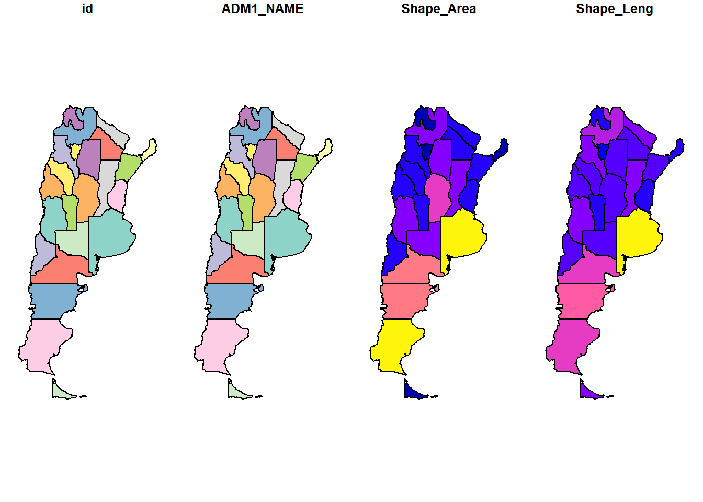
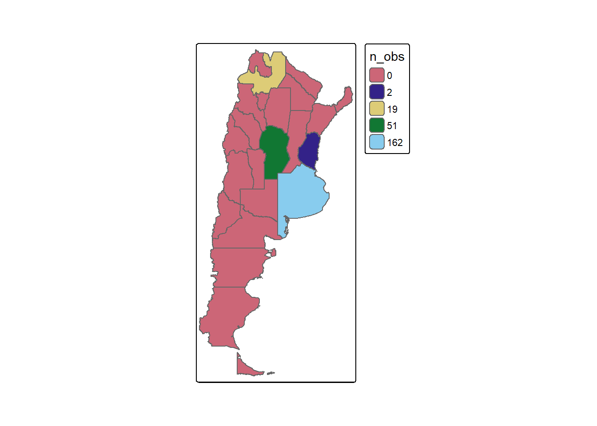
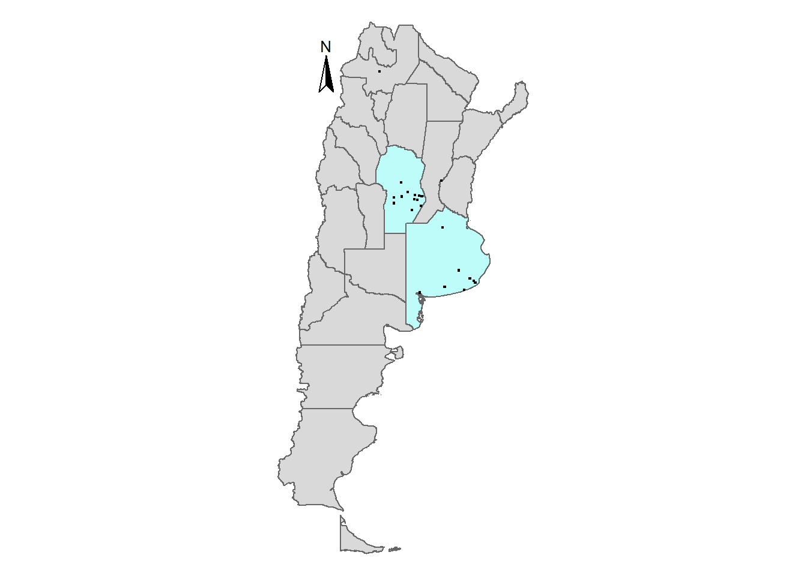
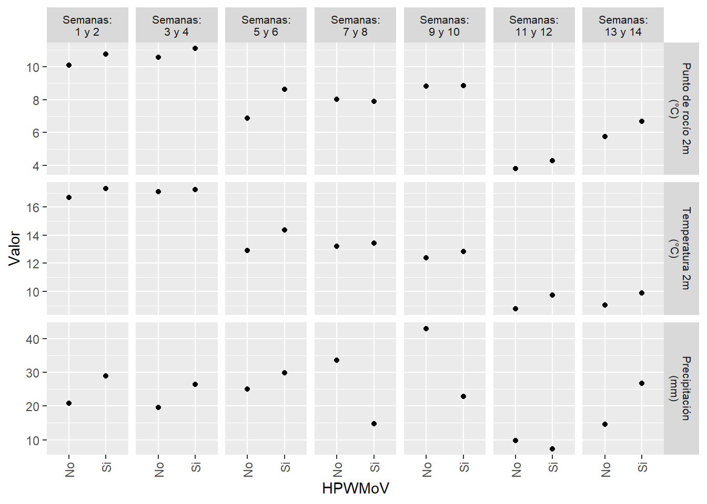
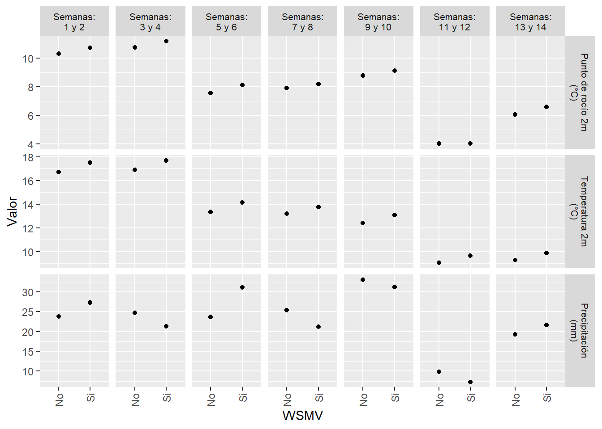
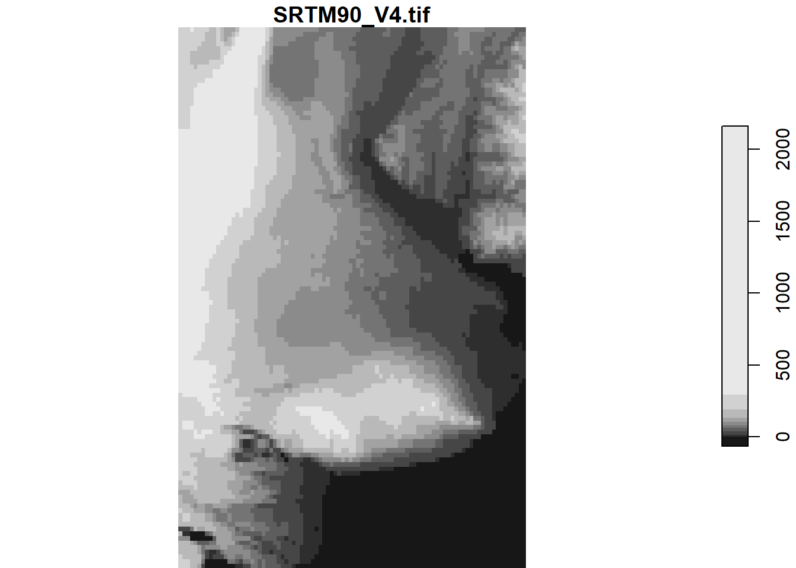
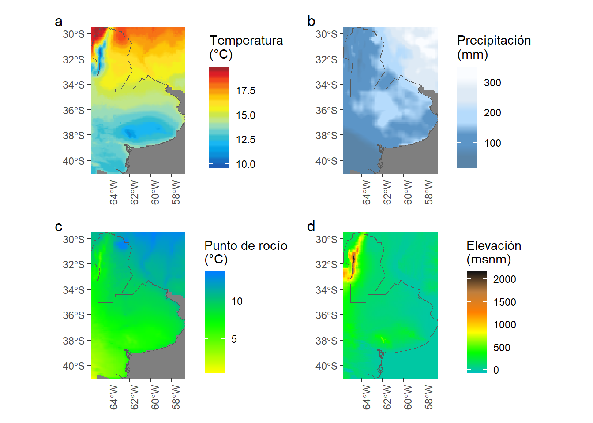
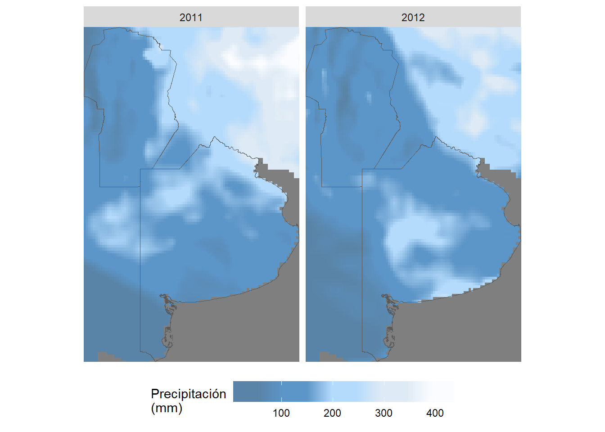

library(dplyr) # Manejo de datos
library(sf) # Manejo de datos vectoriales
library(stars) # Manejo de datos raster
library(ggplot2) # Graficos en general y mapas
library(patchwork) # Union de graficos ggplot2
# remotes::install_github('r-tmap/tmap')
library(tmap) # Mapas temáticos
library(rgee) # GEE en R
library(lubridate) # Manejo de fechas
library(foreach) # Permite paralelizar aunque aqui no lo haremosAplicación a escala regional
Se obtienen datos climáticos a escala regional (provincias de Córdoba y Buenos Aires) y se concatenan con datos de presencia/ausencia de virus recolectados en dos años.
Paquetes
Creación de carpetas para guardar datos descargados
if (!dir.exists('cache_rgee')) {
message('Directory cache_rgee will be created at ', getwd())
dir.create('cache_rgee')
}rgee
Descarga de datos climáticos
A través del producto Reanálisis Europeo (European ReAnalysis - ERA5), el Centro Europeo para Previsiones Meteorológicas a Medio Plazo (European Centre for Medium-Range Weather Forecasts - ECMWF) está produciendo grandes conjuntos de datos climáticos a escala global. Se combinan modelos climáticos y datos observacionales de todo el mundo. Estos productos, disponibilizan información para todo el mundo a escala temporal diaria y mensual desde el año 1979. Catálogo de GEE.
Se descarán datos de precipitaciones, temperatura y temperatura de punto de rocío. La extracción de estas variables se hará para datos de un estudio de presencia de virus heat streak mosaic virus (WSMV) y High Plains wheat mosaic virus (HPWMoV) en trigo.
Los datos originales corresponden a 204 sitios de muestreo realizados en Argentina durante el período 2002-2021 (n = 898), datos provistos por la Dra. María de la Paz Giménez Pecchi, UFYMA, INTA-CONICET. En esta ilustración utilizaremos dos años (2011 y 2012), seleccionando provincias con más de 20 observaciones.
ee_Initialize(drive = TRUE)## ── rgee 1.1.7 ─────────────────────────────────────── earthengine-api 0.1.374 ──
## ✔ user: not_defined
## ✔ Google Drive credentials:
✔ Google Drive credentials: FOUND
## ✔ Initializing Google Earth Engine:
✔ Initializing Google Earth Engine: DONE!
##
✔ Earth Engine account: users/pablopaccioretti
##
✔ Python Path: C:/Users/ariel/AppData/Local/r-miniconda/envs/rgee/python.exe
## ────────────────────────────────────────────────────────────────────────────────Definición de funciones
La función cambio_unidades realiza el cambio de unidades de las variables, a las precipitaciones las transforma de m a mm y a las temperaturas de grados Kelvin a Celsius.
La función select_polygons, de una base de datos vectorial en GEE, selecciona las geometrías de tipo polígono .
cambio_unidades <- function(img) {
precip = img$expression(
'pp * 1000', list(
pp = img$select('total_precipitation_sum')
)
)$rename('total_precipitation_mm')
temp = img$expression(
'temp - 273.15', list(
temp = img$select('temperature_2m')
)
)$rename('temperature_2m_c')
temp_pto_rocio = img$expression(
'dpt - 273.15', list(
dpt = img$select('dewpoint_temperature_2m')
)
)$rename('dewpoint_temperature_2m_c')
img$
addBands(precip)$
addBands(temp)$
addBands(temp_pto_rocio)$
select(c('total_precipitation_mm',
'temperature_2m_c',
'dewpoint_temperature_2m_c'))
}
select_polygons <- function(feature) {
filteredGeoms = feature$
geometry()$
geometries()$
map(ee_utils_pyfunc({function(geometry) {
geometry = ee$Geometry(geometry)
ee$Algorithms$
If(geometry$type()$
compareTo('Polygon'), NULL, geometry)
}}), dropNulls = TRUE)
feature$setGeometry(ee$Geometry$MultiPolygon(filteredGeoms))
}Descarga de limites provinciales
Se descargan los límites administrativos disponibilizados por la FAO en el Global Administrative Unit Layers. Catálogo de GEE.
my_polygons_country <- ee$FeatureCollection("FAO/GAUL/2015/level1")$
filter(ee$Filter$eq('ADM0_NAME', 'Argentina'))$
select(c("ADM1_NAME","Shape_Area", "Shape_Leng"))$
map(select_polygons)Lectura de datos de presencia/ausencia de virus
## Lectura archivo virus ----
my_desease_data <- sf::st_read("data/virus.gpkg")## Reading layer `virus' from data source
## `C:\Users\ariel\OneDrive\GitHub\PISAA_GAB_2023\data\virus.gpkg'
## using driver `GPKG'
## Simple feature collection with 898 features and 6 fields
## Geometry type: POINT
## Dimension: XY
## Bounding box: xmin: -65.4925 ymin: -40.68 xmax: -57.1333 ymax: -24.89877
## Geodetic CRS: WGS 84my_desease_data <-
my_desease_data %>%
filter(Año.de.Colecta %in% c(2011, 2012))
n_sitios <-
my_desease_data %>%
sf::st_geometry() %>%
sf::st_as_sf() %>%
dplyr::distinct() %>%
nrow()# Número de observaciones
cat("Número de observaciones: ", nrow(my_desease_data), "\n\n")Número de observaciones: 234
# Número de sitios
cat("Número de sitios observados: ", n_sitios, "\n\n")Número de sitios observados: 33
Unión de archivos de datos de virus y polígono de provincias
Se convierte una tabla de GEE a un objeto sf. Luego, se interectan los polígonos y los datos de virtus para contar el número de observaciones por provincia, seleccionando aquellas que tengan más de 20 observaciones. Finalmente, se combinan los datos de virus con los nombres de las provincias.
my_polygons_country_sf <- ee_as_sf(my_polygons_country,
via = 'drive')##
## - download parameters (Google Drive)
## Table ID : level1
## Google user : ndef
## Folder name : rgee_backup
## Date : 2023_10_11_12_35_50
## Polling for task <id: KRW34RR6N5LO2KKZ3A5VW57Y, time: 0s>.
## Polling for task <id: KRW34RR6N5LO2KKZ3A5VW57Y, time: 5s>.
## Polling for task <id: KRW34RR6N5LO2KKZ3A5VW57Y, time: 10s>.
## Polling for task <id: KRW34RR6N5LO2KKZ3A5VW57Y, time: 15s>.
## State: COMPLETEDplot(my_polygons_country_sf)
my_polygons_country_sf$n_obs <-
st_intersects(my_polygons_country_sf,
my_desease_data) %>%
lengths()tm_shape(my_polygons_country_sf) +
tm_polygons(fill = "n_obs",
fill.scale = tm_scale_categorical())
my_polygons_province_sf <-
my_polygons_country_sf %>%
filter(n_obs > 20)
my_deasease_province_data <-
st_join(my_desease_data,
my_polygons_province_sf,
largest = TRUE)## Warning: attribute variables are assumed to be spatially constant throughout
## all geometriesMapa de los sitios de muestreo
# Mapa de sitios de muestreo
tm_shape(my_polygons_country_sf) +
tm_polygons() +
tm_shape(my_polygons_province_sf) +
tm_polygons(fill = '#bdfcf9') +
tm_shape(my_deasease_province_data) +
tm_dots(size = 0.15) +
tm_compass(position = c("left", "top")) +
tm_scalebar(text.size = 1) +
tm_layout(legend.outside = TRUE,
legend.format = list(big.mark = ".",
decimal.mark = ","),
frame = FALSE) ## Scale bar set for latitude km and will be different at the top and bottom of the map.
Descarga de datos bioclimáticos
Se descargarán datos bioclimáticos para el período de tiempo comprendido entre el 20 de marzo de cada año de muestreo y tres meses posteriores.
# Especificacion de fechas desde la que se descargaran datos
sf_table <- my_deasease_province_data["geom"]
st_geometry(sf_table) <- 'geometry'
## Manejo de fechas con paquete lubridate
sf_table <-
my_deasease_province_data %>%
mutate(start_date = paste0("20/3/", Año.de.Colecta),
start_date = ymd(as.Date(start_date, "%d/%m/%Y")),
end_date = start_date %m+% months(3),
end_date = ymd(as.Date(end_date, "%d/%m/%Y"))) %>%
rename(Anio_de_Colecta = Año.de.Colecta)
## Definiendo los procesos a realizar en GEE para obtener los datos climaticos
my_polygons_province <- sf_as_ee(my_polygons_province_sf)
min_date <- min(as.Date(sf_table$start_date))
max_date <- max(as.Date(sf_table$end_date))
era5_ee <- ee$ImageCollection("ECMWF/ERA5_LAND/DAILY_RAW")$
filterBounds(my_polygons_province$geometry())$
filterDate(as.character(min_date), as.character(max_date))$
select(c('total_precipitation_sum', 'temperature_2m', 'dewpoint_temperature_2m'))$
map(cambio_unidades)Información de los datos descargados:
# https://github.com/csaybar/rgee/blob/examples//ImageCollection/overview.R
## Resolución del producto
era5_resolution <- era5_ee$first()$projection()$nominalScale()
cat("ERA5 resolution: ", era5_resolution$getInfo(), '\n')ERA5 resolution: 11131.95
# Nombre de bandas
bandNames <- era5_ee$first()$bandNames()$getInfo()
cat("Band Names: ", paste(bandNames, collapse = ", "), '\n')Band Names: total_precipitation_mm, temperature_2m_c, dewpoint_temperature_2m_c
# Número de imágenes
count <- era5_ee$size()
cat("Count: ", count$getInfo(), '\n')Count: 458
# Obtener el rango de fechas de las imágenes
range <- era5_ee$reduceColumns(
ee$Reducer$minMax(),
list("system:time_start")
)
col_min <- eedate_to_rdate(range$get("min"))
col_max <- eedate_to_rdate(range$get("max"))
cat("Date range: ", as.character(col_min), " - ", as.character(col_max), '\n')Date range: 2011-03-20 - 2012-06-19
# Extracción de variables bioclimáticas ----
temporal_aggregate <- function(time_from, delta = 2, unit = 'week') {
t1 <- ee$Date(time_from)
t2 <- t1$advance(delta, unit)
semanal <- era5_ee$
filterDate(t1, t2)
pp_semanal <- semanal$select('total_precipitation_mm')$
sum()$
set(
list(
'system:time_start' = t1$millis()
)
)
temp_semanal <- semanal$
select('temperature_2m_c')$
mean()$
set(
list(
'system:time_start' = t1$millis()
)
)
ptoRocio_semanal <- semanal$
select('dewpoint_temperature_2m_c')$
mean()$
set(
list(
'system:time_start' = t1$millis()
)
)
temp_semanal$
addBands(pp_semanal)$
addBands(ptoRocio_semanal)
}
## Descarga para sitios y años muestreados ----
if (file.exists("cache_rgee/statistics_mean_virus.rds")) {
statistics <- readRDS("cache_rgee/statistics_mean_virus.rds")
} else {
statistics <-
foreach(my_date = unique(sf_table$start_date), .combine = rbind) %do% {
my_ss <- sf_table[sf_table[['start_date']] == my_date, ]
st_geometry(my_ss) <- 'geometry'
time_seq <- seq(unique(my_ss[['start_date']]),
unique(my_ss[['end_date']]),
by = '2 week') %>%
as.character() %>%
lapply(ee$Date) %>%
ee$List()
era5_final <- time_seq$map(ee_utils_pyfunc(function(x) {
temporal_aggregate(x, 2, 'week')
})) %>%
ee$ImageCollection()
ee_extract(era5_final,
my_ss,
scale = era5_resolution,
via = "getInfo",
sf = TRUE)
}
# statistics
saveRDS(statistics, "cache_rgee/statistics_mean_virus.rds")
}
head(statistics)## Simple feature collection with 6 features and 33 fields
## Geometry type: POINT
## Dimension: XY
## Bounding box: xmin: -65.4793 ymin: -24.8988 xmax: -65.4793 ymax: -24.8988
## Geodetic CRS: WGS 84
## ID Anio_de_Colecta Localidad Especie WSMV HPV ADM1_NAME Shape_Area
## 1 345 2011 Salta Trigo 0 1 <NA> NA
## 2 346 2011 Salta Trigo 1 1 <NA> NA
## 3 347 2011 Salta Trigo 0 1 <NA> NA
## 4 348 2011 Salta Trigo 0 1 <NA> NA
## 5 349 2011 Salta Trigo 0 1 <NA> NA
## 6 350 2011 Salta Trigo 0 1 <NA> NA
## Shape_Leng n_obs start_date end_date X0_dewpoint_temperature_2m_c
## 1 NA NA 2011-03-20 2011-06-20 14.51696
## 2 NA NA 2011-03-20 2011-06-20 14.51696
## 3 NA NA 2011-03-20 2011-06-20 14.51696
## 4 NA NA 2011-03-20 2011-06-20 14.51696
## 5 NA NA 2011-03-20 2011-06-20 14.51696
## 6 NA NA 2011-03-20 2011-06-20 14.51696
## X0_temperature_2m_c X0_total_precipitation_mm X1_dewpoint_temperature_2m_c
## 1 16.75437 101.4702 13.88623
## 2 16.75437 101.4702 13.88623
## 3 16.75437 101.4702 13.88623
## 4 16.75437 101.4702 13.88623
## 5 16.75437 101.4702 13.88623
## 6 16.75437 101.4702 13.88623
## X1_temperature_2m_c X1_total_precipitation_mm X2_dewpoint_temperature_2m_c
## 1 16.81544 86.58883 12.23125
## 2 16.81544 86.58883 12.23125
## 3 16.81544 86.58883 12.23125
## 4 16.81544 86.58883 12.23125
## 5 16.81544 86.58883 12.23125
## 6 16.81544 86.58883 12.23125
## X2_temperature_2m_c X2_total_precipitation_mm X3_dewpoint_temperature_2m_c
## 1 15.23244 28.97647 10.45682
## 2 15.23244 28.97647 10.45682
## 3 15.23244 28.97647 10.45682
## 4 15.23244 28.97647 10.45682
## 5 15.23244 28.97647 10.45682
## 6 15.23244 28.97647 10.45682
## X3_temperature_2m_c X3_total_precipitation_mm X4_dewpoint_temperature_2m_c
## 1 14.00617 16.14588 9.693676
## 2 14.00617 16.14588 9.693676
## 3 14.00617 16.14588 9.693676
## 4 14.00617 16.14588 9.693676
## 5 14.00617 16.14588 9.693676
## 6 14.00617 16.14588 9.693676
## X4_temperature_2m_c X4_total_precipitation_mm X5_dewpoint_temperature_2m_c
## 1 12.75802 25.71293 9.168009
## 2 12.75802 25.71293 9.168009
## 3 12.75802 25.71293 9.168009
## 4 12.75802 25.71293 9.168009
## 5 12.75802 25.71293 9.168009
## 6 12.75802 25.71293 9.168009
## X5_temperature_2m_c X5_total_precipitation_mm X6_dewpoint_temperature_2m_c
## 1 11.77645 28.64234 8.677387
## 2 11.77645 28.64234 8.677387
## 3 11.77645 28.64234 8.677387
## 4 11.77645 28.64234 8.677387
## 5 11.77645 28.64234 8.677387
## 6 11.77645 28.64234 8.677387
## X6_temperature_2m_c X6_total_precipitation_mm geometry
## 1 11.80599 25.25634 POINT (-65.4793 -24.8988)
## 2 11.80599 25.25634 POINT (-65.4793 -24.8988)
## 3 11.80599 25.25634 POINT (-65.4793 -24.8988)
## 4 11.80599 25.25634 POINT (-65.4793 -24.8988)
## 5 11.80599 25.25634 POINT (-65.4793 -24.8988)
## 6 11.80599 25.25634 POINT (-65.4793 -24.8988)Manejo de base de datos para graficar
statistics_long_sf <-
statistics %>%
tidyr::pivot_longer(
cols = -c(ID:end_date,geometry),
names_sep = 3,
names_to = c('semana', 'variable')
) %>%
mutate(estacion = ifelse(grepl("*-09-*", start_date), "primavera", "otoño"),
anio = year(start_date)) %>%
tidyr::drop_na(value)
semana_labels <- c(
X0_ = "Semanas:\n1 y 2",
X1_ = "Semanas:\n3 y 4",
X2_ = "Semanas:\n5 y 6",
X3_ = "Semanas:\n7 y 8",
X4_ = "Semanas:\n9 y 10",
X5_ = "Semanas:\n11 y 12",
X6_ = "Semanas:\n13 y 14"
)
variable_labels <- c(
total_precipitation_mm = "Precipitación\n(mm)",
temperature_2m_c = "Temperatura 2m\n(°C)",
dewpoint_temperature_2m_c = "Punto de rocío 2m\n(°C)"
)statistics_long_sf %>%
tidyr::drop_na(HPV) %>%
ggplot(aes(as.factor(HPV), value)) +
stat_summary(fun = 'mean',
geom = "point") +
labs(x = "HPWMoV",
y = "Valor") +
facet_grid(variable ~ semana,
scales = "free_y",
labeller = labeller(
variable = variable_labels,
semana = semana_labels
)) +
scale_x_discrete(labels = c("0" = "No",
"1" = "Si")) +
theme(
strip.text = element_text(size = 8),
legend.position = 'bottom',
axis.text.x = element_text(
angle = 90,
hjust = 1,
vjust = 0.5
)
)
statistics_long_sf %>%
tidyr::drop_na(WSMV) %>%
ggplot(aes(as.factor(WSMV), value)) +
stat_summary(fun = 'mean',
geom = "point") +
labs(x = "WSMV",
y = "Valor") +
facet_grid(variable ~ semana,
scales = "free_y",
labeller = labeller(
variable = variable_labels,
semana = semana_labels
)) +
scale_x_discrete(labels = c("0" = "No",
"1" = "Si")) +
theme(
strip.text = element_text(size = 8),
legend.position = 'bottom',
axis.text.x = element_text(
angle = 90,
hjust = 1,
vjust = 0.5
)
)
## Descarga para toda la zona y años muestreados ----
if (file.exists("cache_rgee/statistics_mean_provinces.rds")) {
statistics_province <- readRDS("cache_rgee/statistics_mean_provinces.rds")
} else {
statistics_province <-
foreach(my_date = unique(sf_table$start_date),
.combine = c) %do% {
my_ss <- sf_table[sf_table[['start_date']] == my_date, ]
sf::st_geometry(my_ss) <- 'geometry'
months <- seq(unique(my_ss[['start_date']]),
unique(my_ss[['end_date']]),
by = '2 week') %>%
as.character() %>%
lapply(ee$Date) %>%
ee$List()
months <- my_date %>%
as.character() %>%
lapply(ee$Date) %>%
ee$List()
era5_final <-
months$map(rgee::ee_utils_pyfunc(function(date) {
temporal_aggregate(date, 3, 'month')})) %>%
ee$ImageCollection()
my_stars_bioclimatic <- rgee::ee_as_stars(
era5_final$toBands(),
my_polygons_province$geometry(),
scale = era5_resolution,
via = "drive"
) %>%
stars::st_as_stars()
}
names(statistics_province) <- unique(sf_table$start_date)
statistics_province <- merge(statistics_province, name = "time")
names(statistics_province) <- 'value'
saveRDS(statistics_province, "cache_rgee/statistics_mean_provinces.rds")
}
myTimes <- st_get_dimension_values(statistics_province, 'time')
estacion_label <- function(string) {
my_vector <- unlist(string)
estacion <- ifelse(grepl("*-09-*", my_vector), "Primavera", "Otoño")
anio <- gsub("-.*$","\\1", my_vector)
my_label <- anio#paste0(estacion, ":\n ", anio)
my_label <- data.frame(my_label)
colnames(my_label) <- colnames(string)
my_label
}
calculate_range <- function(x) {
my_values <- c(min = purrr::map(x, min, na.rm = TRUE),
max = purrr::map(x, max, na.rm = TRUE)) %>%
unlist()
names(my_values) <- c('min', 'max')
my_values
}# Media de variables meteoroógica para todos los años muestreados -----
statistics_resumen <-
st_apply(statistics_province[, , , , ], c(1, 2, 3), mean, na.rm = TRUE)
## Descritiva promedio ----
### Temperatura ----
mean(pull(statistics_resumen[,,,1]), na.rm = TRUE)
min(pull(statistics_resumen[,,,1]), na.rm = TRUE)
max(pull(statistics_resumen[,,,1]), na.rm = TRUE)
### Precipitaciones ----
mean(pull(statistics_resumen[,,,2]), na.rm = TRUE)
min(pull(statistics_resumen[,,,2]), na.rm = TRUE)
max(pull(statistics_resumen[,,,2]), na.rm = TRUE)
### Punto Rocio ----
mean(pull(statistics_resumen[,,,3]), na.rm = TRUE)
min(pull(statistics_resumen[,,,3]), na.rm = TRUE)
max(pull(statistics_resumen[,,,3]), na.rm = TRUE)El promedio de temperatura para toda la región fue de 14.9°C, el valor máximo promedio observado en los años en estudio fue de 19.9°C, el valor mínimo promedio fue de 9.6°C observándose en la zona noroeste de la región.
Las precipitaciones promedio para la región en estudio, fueron de 155mm para otoño variando entre 17mm y 352mm.
La temperatura de punto de rocío promedio fue de 8.9°C. En el noroeste de la región en estudio se observaron las menores temperaturas de punto de rocío (0.5°C), por efecto de la gran altitud de esa zona.”
Descarga DEM
dem_ee <- ee$Image('CGIAR/SRTM90_V4')$
select('elevation')
if (file.exists("cache_rgee/dem.rds")) {
dem <- readRDS("cache_rgee/dem.rds")
} else {
dem <- rgee::ee_as_stars(
dem_ee,
my_polygons_province$geometry(),
scale = era5_resolution,
via = "drive"
) %>%
stars::st_as_stars()
# DEM
saveRDS(dem, "cache_rgee/dem.rds")
}
st_get_dimension_values(dem, "band")## NULLplot(dem)
## Graficos ----
temp_range <- calculate_range(statistics_resumen[,,,1])
rain_range <- calculate_range(statistics_resumen[,,,2])
dewpt_range <- calculate_range(statistics_resumen[,,,3])
temperatura_promedio_ggplt <-
ggplot() +
geom_stars(data = statistics_resumen[,,,1]) +
geom_sf(data = my_polygons_province_sf, fill = NA) +
coord_sf(lims_method = "geometry_bbox", expand = FALSE) +
scale_fill_gradientn(limits = temp_range,
colours = cptcity::cpt(pal = "arendal_temperature")) +
labs(fill = "Temperatura\n(°C)",
y = NULL, x = NULL) +
theme(axis.text.x = element_text(angle = 90))
pp_promedio_ggplt <-
ggplot() +
geom_stars(data = statistics_resumen[,,,2]) +
geom_sf(data = my_polygons_province_sf, fill = NA) +
coord_sf(lims_method = "geometry_bbox", expand = FALSE) +
scale_fill_gradientn(limits = rain_range,
colours = cptcity::cpt(pal = "colo_alpen_sky_rain_brolly")) +
labs(fill = "Precipitación\n(mm)",
y = NULL, x = NULL) +
theme(axis.text.x = element_text(angle = 90))
ptoro_promedio_ggplt <-
ggplot() +
geom_stars(data = statistics_resumen[,,,3]) +
geom_sf(data = my_polygons_province_sf, fill = NA) +
coord_sf(lims_method = "geometry_bbox", expand = FALSE) +
# facet_wrap(. ~ epoca) +
scale_fill_gradientn(limits = dewpt_range,
colours = cptcity::cpt(pal = "idv_relative_humidity")) +
labs(fill = "Punto de rocío\n(°C)",
y = NULL, x = NULL) +
theme(axis.text.x = element_text(angle = 90))
dem_ggplt <-
ggplot() +
geom_stars(data = dem) +
geom_sf(data = my_polygons_province_sf, fill = NA) +
coord_sf(lims_method = "geometry_bbox", expand = FALSE) +
scale_fill_gradientn(colours =
cptcity::cpt(pal = "grass_elevation")) +
labs(fill = "Elevación\n(msnm)",
y = NULL, x = NULL) +
theme(axis.text.x = element_text(angle = 90))
temp_pp_ptoro_prom_dem_ggplt <-
temperatura_promedio_ggplt +
pp_promedio_ggplt +
ptoro_promedio_ggplt +
dem_ggplt +
plot_annotation(tag_levels = 'a')
temp_pp_ptoro_prom_dem_ggplt
## Precipitacion promedio ----
ggplot() +
geom_stars(data = statistics_province[, , , 2, ]) +
geom_sf(data = my_polygons_province_sf, fill = NA, size = 0.2) +
coord_sf(lims_method = "geometry_bbox", expand = FALSE) +
facet_wrap(. ~ time,
ncol = 5,
labeller = estacion_label) +
scale_fill_gradientn(colours = cptcity::cpt(pal = "colo_alpen_sky_rain_brolly")) +
labs(fill = "Precipitación\n(mm)",
y = NULL, x = NULL) +
# theme_void() +
theme(
legend.position = 'bottom',
legend.key.width = unit(1.3, "cm"),
axis.text = element_blank(),
axis.title = element_blank(),
axis.ticks.length = unit(0, "pt"),
axis.ticks.length.x = NULL,
axis.ticks.length.x.top = NULL,
axis.ticks.length.x.bottom = NULL,
axis.ticks.length.y = NULL,
axis.ticks.length.y.left = NULL,
axis.ticks.length.y.right = NULL
)
Paccioretti, P., Giannini-Kurina, F., Suarez, F., Scavuzzo, M., Alemandri, V. M., Gómez Montenegro, B. and Balzarini, M. (2023). Protocol for automating climatic data download from the cloud and generating bio-meteorological indicators for crop epidemiological monitoring. Agris-cientia 40: 93-100. 10.31047/1668.298x.v40.n1.39619